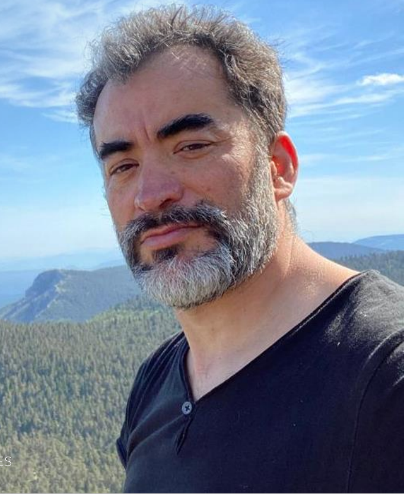
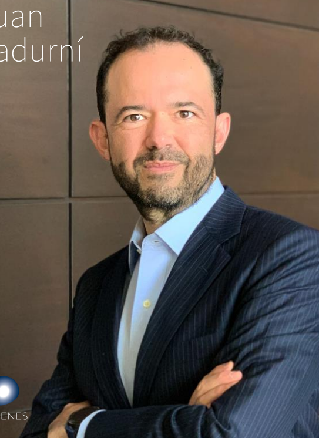
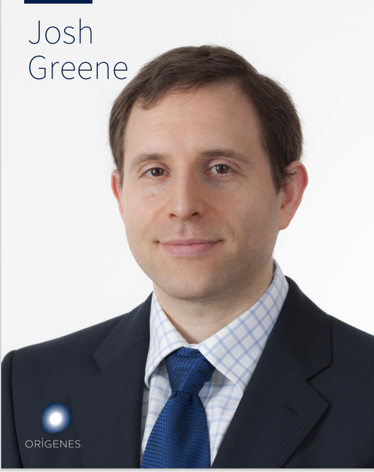

Origenes
Assisting
Technology for
Sensory Processing
Disorder

Manuel Segovia
Lead Scientist
I'm passionate about improving lives through technology, and I lead a team of biomedical engineers at Origenes
developing innovative technologies to promote social interaction in individuals with autism.
“With a Ph.D. in Biomedical Engineering from UCLA and experience as a postdoctoral fellow at Stanford University,
I specialize in wearable sensors and neurofeedback systems for children with autism. My research has been published
in top-tier journals such as Nature Communications and IEEE Transactions on Biomedical Engineering. At Oticon,
I've developed a wearable sensor system that uses machine learning algorithms to detect and monitor social behavior in real-time,
providing personalized feedback to children with autism and their caregivers. ”

Juan Sadurni
Business Manager
I develop algorithms and machine learning models that power rehabilitation interventions for individuals with autism.
“ With a Bachelor's degree in Computer Science from MIT and experience at Google,
I specialize in natural language processing and speech recognition. ”

Josh Greene
Financial Manager
I design and implement clinical trials to evaluate the efficacy of interventions at Origenes
“ With a Master's degree in Clinical Research from Duke University and experience at the Autism Research Institute,
specialize in designing and conducting clinical trials for autism interventions. ”

Jason Park
Hardware Engineer
I design and develop hardware systems that enable our rehabilitation interventions at Origenes,
leveraging the latest technologies to create user-friendly and reliable devices.
“ With a Bachelor's degree in Electrical Engineering from Caltech and experience at Intel and Apple, I specialize in hardware design and prototyping.
At Origenes, I've designed and developed a wearable EEG headset that measures brain activity during social interactions, providing insights into the neural mechanisms underlying social behavior in autism.”
I apply evidence-based interventions to support the social and communication skills of individuals with autism.
“ With a Master's degree in Applied Behavior Analysis from Columbia University and experience as a board-certified behavior analyst,
I specialize in delivering interventions that target specific social and communication deficits in autism. At Origenes,
I've collaborated with engineers and researchers to develop and refine our rehabilitation interventions, ensuring that they're
grounded in the latest evidence and tailored to the individual needs of each participant. The interdisciplinary nature of our team has
allowed us to create innovative and effective interventions that have the potential to transform the lives of individuals with autism and their families. ”